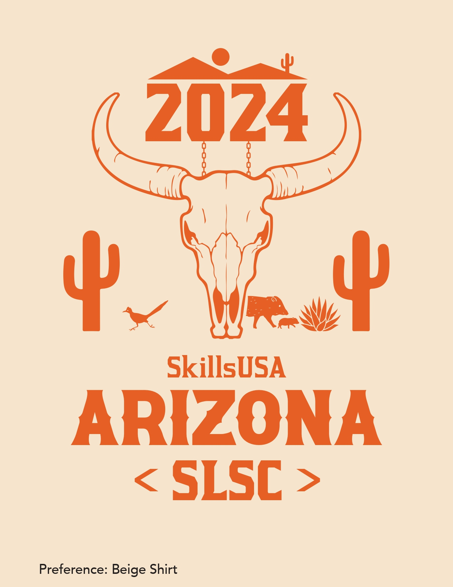
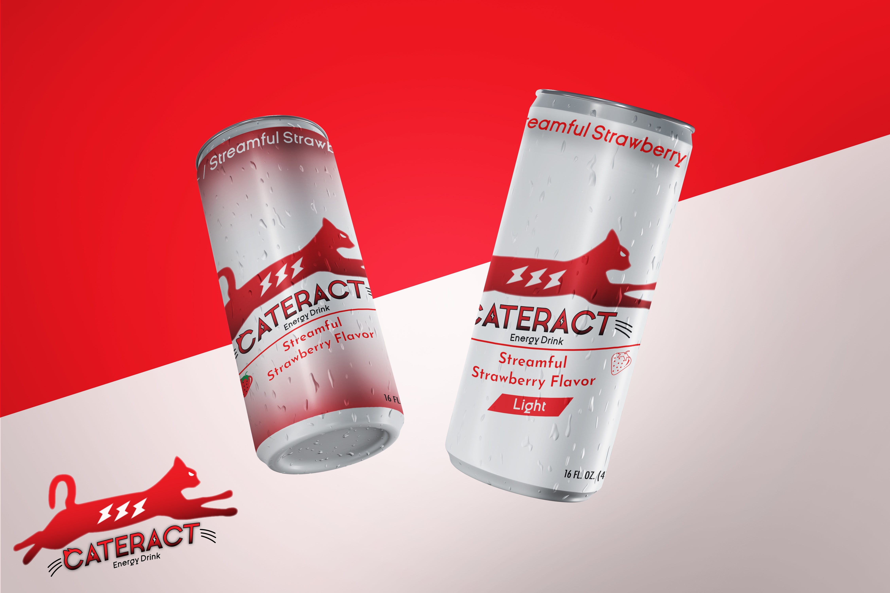

My Projects
Graphic Design
Here are some of my showcased works I have created for class during Graphic Design at Combs High School.
SLSC Challenge Shirt Design

"Nightfall" Halloween Poster

Cateract Energy Drink

Website Design
These are websites I came up with during class.
Collaborative Projects
These are projects I worked with my peers with during class.